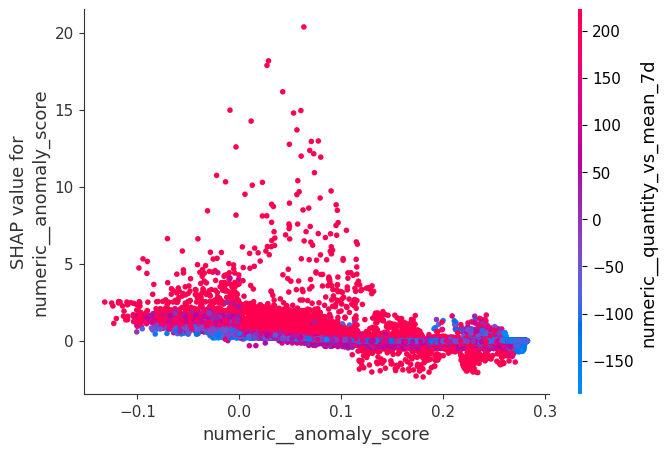

Shap results analysis
SHAP Analysis of the Hybrid Model
The SHAP analysis showed that the model was mainly driven by recent demand behavior and short-term sales dynamics.
The most important features in the global analysis were:
quantity_vs_mean_7dquantity_sum_mean_7dquantity_pct_vs_mean_7dorder_counttotal_price_vs_mean_30dcustomer_count
This indicates that the model learned mainly from:
- deviation from the recent sales pattern
- short-term quantity trends
- recent order volume
- recent customer activity
In other words, the model gives more weight to how current sales compare to the recent local history than to static product information or isolated pricing variables.
Role of Price and Commercial Features
Price-related features such as unit_price_mean, discount_mean, total_price_sum, and avg_ticket were present in the SHAP ranking, but with much lower importance than the short-term demand features.
This suggests that, in this dataset, recent demand behavior was more informative than price variables for the prediction task.
Role of the Anomaly Features
In the global SHAP ranking, anomaly_score appeared with relatively low importance.
This means that the anomaly signal was not a main global driver of the model. However, it was still part of the feature set and contributed more than some secondary variables.
At first sight, this suggests that the unsupervised anomaly signal played a complementary role, while the main predictive power came from temporal and operational features.

Result
feature mean_abs_shap
0 numeric__quantity_vs_mean_7d 42.508595
1 numeric__quantity_sum_mean_7d 41.473451
2 numeric__quantity_pct_vs_mean_7d 38.206664
3 numeric__order_count 34.636829
4 numeric__total_price_vs_mean_30d 18.679632
5 numeric__customer_count 15.100460
6 numeric__quantity_sum_sum_7d 10.609028
7 numeric__discount_mean 2.794836
8 numeric__unit_price_mean 1.405567
9 numeric__total_price_sum 1.170458
10 numeric__avg_ticket 0.610888
11 numeric__unit_price_mean_mean_7d 0.559655
12 numeric__total_price_sum_mean_7d 0.381464
13 numeric__total_price_sum_mean_30d 0.194015
14 numeric__history_less_than_7d 0.106158
15 numeric__anomaly_score 0.075678
16 numeric__discount_mean_mean_14d 0.033402
17 categorical__Product_Beck's 0.028208
18 categorical__Product_Tomato Juice 0.019013
19 numeric__total_price_sum_std_7d 0.004763
SHAP Analysis Only on Anomalous Records
A second SHAP analysis was performed using only rows with:
anomaly_flag == 1
Result
feature mean_abs_shap
0 numeric__quantity_vs_mean_7d 67.172058
1 numeric__quantity_sum_mean_7d 56.131173
2 numeric__quantity_pct_vs_mean_7d 41.373141
3 numeric__order_count 34.756485
4 numeric__total_price_vs_mean_30d 27.956116
5 numeric__customer_count 15.108198
6 numeric__quantity_sum_sum_7d 12.366142
7 numeric__discount_mean 4.034523
8 numeric__unit_price_mean 3.154246
9 numeric__total_price_sum 2.194163
10 numeric__avg_ticket 1.756597
11 numeric__anomaly_score 1.409870
12 numeric__total_price_sum_mean_7d 1.406136
13 numeric__unit_price_mean_mean_7d 1.024164
14 numeric__total_price_sum_mean_30d 0.433080
15 numeric__history_less_than_7d 0.119805
16 numeric__anomaly_flag 0.112399
17 numeric__discount_mean_mean_14d 0.065106
18 numeric__total_price_sum_std_7d 0.023863
19 categorical__Product_Tomato Juice 0.017404
In this filtered analysis, the importance of anomaly_score increased significantly, rising from a very small global contribution to a much more relevant position.
This is an important result.
It suggests that:
- in the full dataset, the anomaly signal has a limited global effect
- in the anomalous subset, the anomaly score becomes much more informative
- the unsupervised signal is especially useful to explain abnormal demand situations
This behavior is coherent with the hybrid design of the solution.
The supervised model depends mainly on recent sales dynamics for general prediction, but the anomaly score becomes more relevant when the analysis is restricted to unusual cases.
Interpretation
This result supports the idea that the anomaly component is not the main engine of the model, but it adds value in the right context.
A reasonable interpretation is:
The anomaly score is more useful as a local refinement signal for abnormal situations than as a dominant global feature.
This is a positive finding for the hybrid approach, because it shows that the anomaly information is not random or decorative. Instead, it becomes more meaningful exactly where abnormal behavior is present.
Final Conclusion
The SHAP results indicate that the model is primarily driven by:
- recent quantity behavior
- short-term trend deviation
- order and customer activity
The anomaly-based signal had a secondary global role, but it became much more important inside the anomalous subset.
This suggests that the hybrid architecture is valid:
- temporal and operational features explain the general sales pattern
- anomaly score adds more value when the model is dealing with unusual patterns
Therefore, the anomaly feature should be interpreted as a contextual enhancement to the model, not as its main predictive driver.